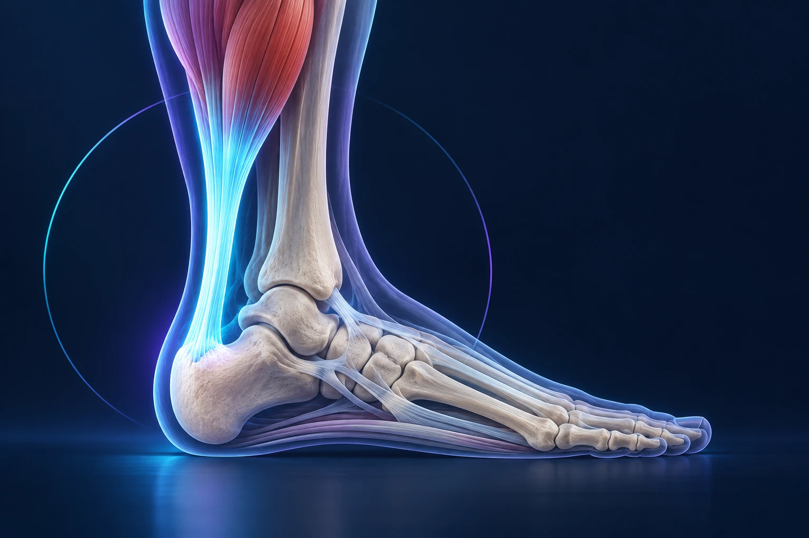

Douleur du tendon d’Achille : faut-il arrêter complètement le sport ?

Une douleur progressive du tendon d’Achille ne nécessite pas toujours l’arrêt de toute activité. Elle demande surtout de comprendre ce que le tendon tolère et d’adapter les contraintes, avec un travail de renforcement progressif. En revanche, une douleur brutale accompagnée d’un claquement ou d’une perte de poussée doit faire rechercher rapidement une rupture.
Que signifie le terme « tendinopathie » ?
Le tendon d’Achille relie les muscles du mollet au calcanéum, l’os du talon. Il participe à la poussée lors de la marche, de la course et des sauts. Une tendinopathie désigne une douleur et une altération de la fonction de ce tendon ; le terme est plus large que celui de « tendinite ».
La douleur peut se situer dans le corps du tendon, au-dessus du talon, ou au niveau de son insertion sur l’os. Cette localisation compte pour le choix des exercices. Les deux situations ne doivent pas recevoir automatiquement le même programme. Royal National Orthopaedic Hospital, guide sur les tendinopathies d’Achille.
On peut comparer le tendon à un câble qui transmet une force et s’adapte à son usage. Après une variation importante des contraintes, sa capacité du moment peut être dépassée. Le traitement cherche à rétablir progressivement cette capacité, sans supposer que le repos seul résoudra durablement le problème.
Pourquoi la douleur apparaît-elle parfois à la reprise ?
Une augmentation rapide de la course, davantage de côtes ou un changement d’activité peuvent précéder les symptômes. Il n’existe toutefois pas une cause unique. Le contexte de santé, les capacités musculaires et certains traitements peuvent aussi entrer dans l’analyse.
Une raideur aux premiers pas du matin, une douleur au démarrage ou une sensibilité après l’activité sont des descriptions fréquentes. Le tendon peut sembler plus confortable pendant l’effort, puis réagir ensuite. Cette amélioration temporaire ne prouve pas que la séance était adaptée. Guy’s and St Thomas’, comprendre la tendinopathie d’Achille.
Pour préparer votre rendez-vous, revenez sur les semaines précédant la douleur. Avez-vous augmenté la fréquence, la vitesse ou les dénivelés ? Votre travail vous fait-il marcher davantage ? Avez-vous repris après un arrêt prolongé ? Ce récit permet de raisonner sur votre situation plutôt que sur une seule paire de chaussures.
Dans quelles situations faut-il consulter rapidement ?
Si vous ressentez soudainement un claquement, une sensation de coup derrière la jambe ou une difficulté nouvelle à pousser sur l’avant-pied, faites rechercher une rupture. Il est parfois encore possible de marcher, et la douleur peut diminuer après l’accident. Ces éléments ne suffisent pas à rassurer. Cambridge University Hospitals, rupture du tendon d’Achille.
Interrompez alors le sport et demandez une évaluation rapide. N’essayez pas de vérifier la solidité du tendon en répétant des sauts ou des montées sur la pointe du pied. Le professionnel choisira les tests utiles et les modalités de protection.
Une douleur progressive mérite également un avis si elle persiste, limite la marche ou se répète à chaque tentative de reprise. Signalez les traitements récents et vos antécédents. L’échographie ou l’IRM peuvent être utiles selon la question posée, mais ne sont pas systématiquement nécessaires pour reconnaître une tendinopathie.
Faut-il tout arrêter ou adapter les efforts ?
En dehors d’une lésion aiguë nécessitant une protection particulière, le repos relatif consiste à réduire ce qui entretient la douleur tout en conservant des activités tolérées. Cela peut signifier suspendre temporairement les accélérations ou les sauts, tout en maintenant une autre forme d’exercice adaptée.
Le renforcement progressif occupe une place centrale. La charge, le nombre de répétitions et l’amplitude se règlent en fonction de votre situation. Un exercice trouvé en ligne n’est pas automatiquement approprié, notamment lorsque la douleur se situe à l’insertion du tendon sur le talon.
La récupération peut demander plusieurs mois et comporte parfois des fluctuations. Le suivi sert à ajuster le programme plutôt qu’à multiplier les changements de traitement à chaque journée moins confortable. Cambridge University Hospitals, principes de rééducation.
Précisez avec le kinésithérapeute comment surveiller la réaction pendant l’exercice et le lendemain. Demandez aussi quel niveau de gêne doit conduire à réduire la charge ou à reprendre contact. Ce cadre est plus utile qu’une consigne générale de « forcer un peu » ou de « ne plus bouger ».
Quand les autres traitements ou la chirurgie sont-ils discutés ?
Selon la localisation et l’évolution, le médecin peut discuter des adaptations de chaussage, des aides temporaires ou d’autres traitements. Leur rôle doit être expliqué : diminuer un frottement, modifier une contrainte ou accompagner la rééducation ne correspond pas nécessairement à réparer directement le tendon.
Une intervention peut être envisagée dans certaines formes persistantes malgré un traitement non chirurgical bien conduit. Le geste dépend des lésions : il n’existe pas une opération unique pour toutes les douleurs d’Achille. Les bénéfices espérés doivent être mis en regard des risques de cicatrisation, d’infection, de lésion nerveuse ou de douleur résiduelle. Royal National Orthopaedic Hospital, options thérapeutiques.
Une rupture aiguë relève d’une discussion différente, avec un traitement fonctionnel protégé ou chirurgical selon le contexte. Le programme destiné à une tendinopathie ne doit pas être appliqué à une rupture suspectée.
Comment construire le retour à votre sport ?
La marche quotidienne, la course lente, les côtes et les sauts représentent des étapes distinctes. Notez l’activité réalisée et la réaction du tendon, puis augmentez avec l’équipe les contraintes que vous êtes prêt à retrouver. La régularité du programme importe davantage qu’une séance particulièrement ambitieuse.
Pour une reprise de course ou de randonnée autour de Sète, choisissez d’abord un trajet dont vous pouvez facilement réduire la durée. Le plaisir de retrouver l’activité reste un objectif, avec un programme compatible avec votre récupération.
Consultez les informations du Dr François Lozach sur le pied et la cheville. Si votre douleur persiste, vous pouvez prendre rendez-vous avec le Dr François Lozach à Sète en apportant vos examens et la description des soins déjà suivis.
Ces conseils sont d’ordre général et ne remplacent pas un avis médical personnalisé.